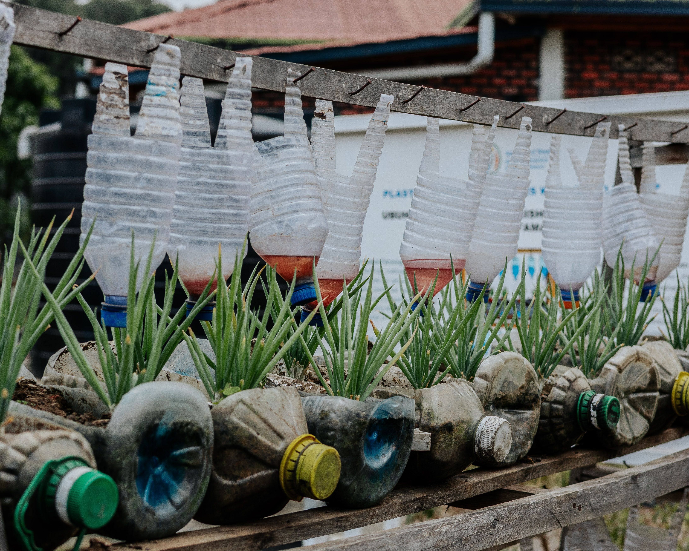
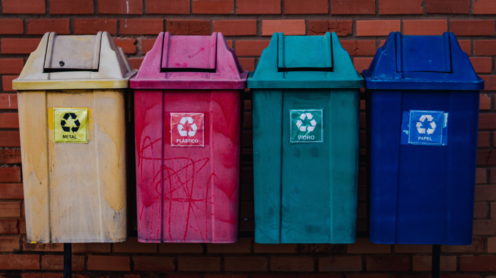
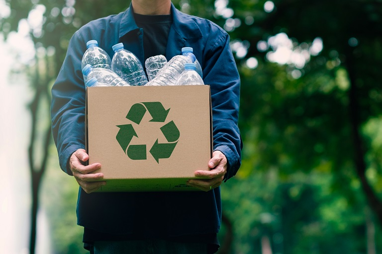
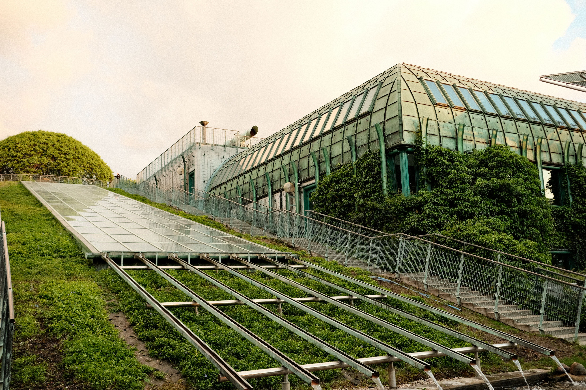

Importância da Reciclagem
Compreenda a importância vital da reciclagem para a preservação ambiental, economia de recursos e redução do lixo nas cidades.
Explore fatos surpreendentes sobre o meio ambiente, entenda os ciclos dos materiais e descubra como pequenas atitudes diárias protegem o coração da Terra.
Conteúdos audiovisuais e interativos selecionados com acessibilidade completa (legendas integradas, títulos descritivos e controle por teclado via Tab e Enter).
Compreenda a importância vital da reciclagem para a preservação ambiental, economia de recursos e redução do lixo nas cidades.
Ouça este episódio educativo repleto de orientações sobre a separação correta de resíduos domésticos e sustentabilidade.
Assista a este episódio educativo e didático de O Show da Luna sobre a separação correta e a reciclagem dos resíduos.
Dicas práticas, explicações e conhecimentos fundamentais sobre reciclagem, sustentabilidade e reaproveitamento de materiais.
Muitos não sabem como fazer uma horta, mas ao contrário do que pensam, não há necessidade de comprar vasos caros. As grandes cidades são verdadeiros depósitos de materiais descartados. O chamado "lixo" pode ser uma riqueza para quem sabe observar e está disposto a recondicionar materiais. Vários tipos de resíduos podem ser reaproveitados, com benefícios tanto para a cidade, que fica mais limpa, quanto para o indivíduo e o seu bolso. Garrafas PET, latas de alumínio e caixotes de madeira tornam-se canteiros perfeitos para hortaliças e temperos frescos.
Saiba mais sobre hortas sustentáveis!
Você já deve ter reparado que, em muitos espaços públicos, escolas e empresas, existem diferentes lixeiras de reciclagem coloridas lado a lado, não é mesmo? Elas não estão ali por acaso: seguem um padrão internacional (CONAMA no Brasil) para nos ajudar a separar corretamente os resíduos e facilitar a coleta seletiva: azul para papel, vermelho para plástico, verde para vidro e amarelo para metal. Essa prática simples tem um impacto enorme na redução de desperdício e na destinação correta dos materiais, apoiando toda a cadeia de catadores e indústrias de triagem.
Saiba mais sobre o código de cores!
A reciclagem é um ato de responsabilidade e consciência com o meio ambiente e com a sociedade. Trata-se do processo de transformação de resíduos que seriam descartados em novos produtos ou matérias-primas secundárias. Pequenas ações, como higienizar e separar corretamente os próprios resíduos, têm um impacto positivo relevante na preservação dos recursos naturais, na diminuição da poluição de rios e solos, e contribuem ativamente para a mitigação das mudanças climáticas globais.
Saiba mais sobre o impacto da reciclagem!
A sustentabilidade é sustentada pelo conceito do Triple Bottom Line: o pilar ambiental, o social e o econômico. Nenhum projeto sobrevive isoladamente: a preservação do meio ambiente precisa conviver com a justiça e a dignidade humana nas comunidades, amparada por viabilidade financeira ética. Cada um desses aspectos desempenha um papel determinante na construção de um futuro sustentável e equilibrado para as próximas gerações.
Saiba mais sobre os pilares sustentáveis!